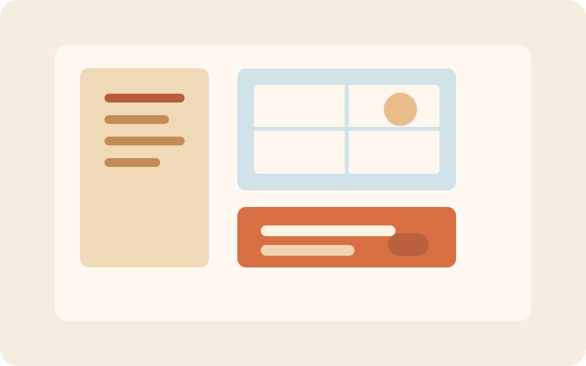

Project North Window

Project North Window is a sample placeholder for a real project page. Its purpose is to show how this site can present work in a way that feels clear, approachable, and easy to update.
The current phase is focused on structure: deciding what belongs on the page, what should stay in private notes, and how often updates should be shared publicly.
A useful project page does not need to be long. It just needs to answer a few practical questions for a reader:
- What is the project trying to do?
- Why is it interesting or meaningful?
- What stage is it currently in?
- What happens next?
Next up: replace this sample content with the real story of one of your active projects and add links, screenshots, or notes as the work develops.